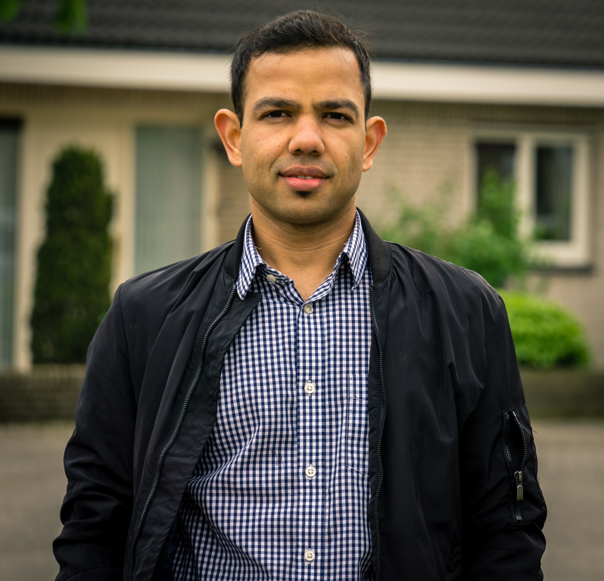

|
Abhishek Sharma I am a researcher at Ecole Polytechnique with a particular focus on learning functional mapping between images or 3D data or even graphs and its extension to control theory (e.g. non-linear dynamics with koopman operator), generously supported by Maks ERC grant. I graduated with a Masters degree in Math, Vision and Learning with distinction. Before that, I was somewhat fortunate to be hired by Catherine at CNRS, Francois Fleuret at Idiap/EPFL, and Jean Ponce at INRIA/ENS. |
 |